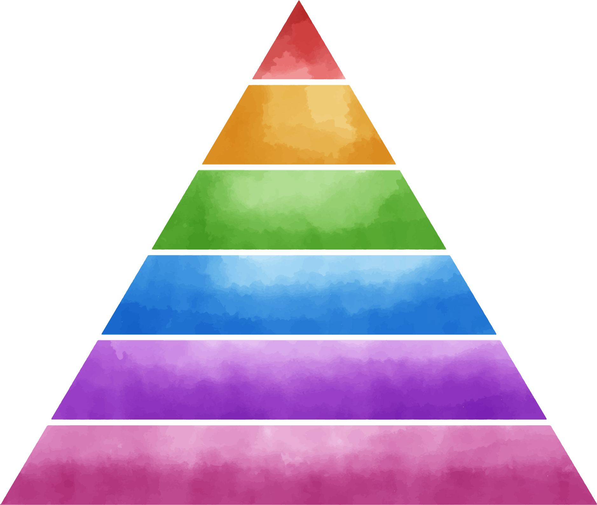
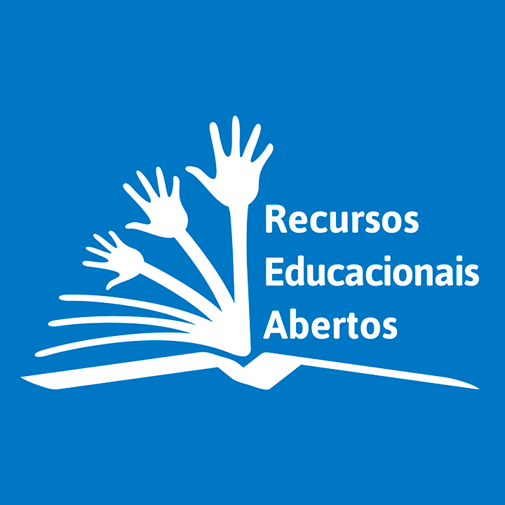
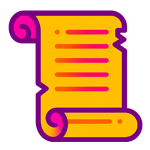
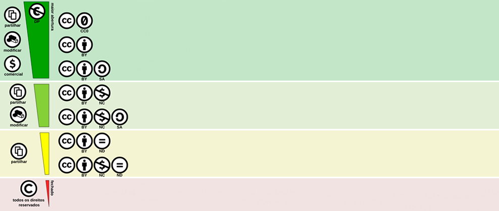

Publicações on-line: Mooc, Moodle e linguagem HTML
Seja bem-vindo e bem-vinda!
A seguir veja algumas informações importantes sobre esta aula.
Objetivos de aprendizagem
Ao final desta aula você poderá:
Explorar as diversas linguagens utilizadas em plataformas digitais: Massive Open Online Courses (MOOC); Moodle e Código em HTML.
Reconhecer as características dos Recursos Educacionais Abertos e a importância dessa licença na democratização do conhecimento.
Identificar as diferentes formas de licença para uso de materiais em cursos on-line.
Identificar as regras gerais de Direitos Autorais para uso de materiais em cursos online.
Introdução
Como temos visto até aqui, a revolução digital transformou de forma significativa a maneira como as pessoas acessam e consomem informação, e a educação não é exceção a essa transformação. A ascensão dos cursos online autoinstrucionais tem sido um reflexo dessa mudança, com demanda crescente por modos de aprender que se ajustem às rotinas e estilos de vida variados dos estudantes.
Nesse cenário, o uso de elementos audiovisuais e interativos assume papel estratégico, pois contribui para a organização da informação, a contextualização dos conteúdos e o engajamento cognitivo do aluno. Diferentes estudos e modelos educacionais indicam que a aprendizagem tende a ser mais significativa quando o aluno interage ativamente com o conteúdo, mobilizando múltiplos sentidos e aplicando o conhecimento em situações práticas.
A chamada “Pirâmide do Aprendizado”, amplamente difundida em contextos educacionais, ajuda a ilustrar essa transição de abordagens mais passivas para estratégias mais ativas de aprendizagem. O modelo reforça a importância de diversificar metodologias e recursos didáticos, especialmente em ambientes virtuais de aprendizagem.
A Pirâmide do Aprendizado
Depois de 2 semanas, nós lembramos de ...

LerOuvirVerAssistir a um filmeParticipar de uma discussãoFazer uma simulação teatral de algum fato
10% do que LEMOS
20% do que OUVIMOS
30% do que VEMOS
50% do que VEMOS e OUVIMOS
70% do que FALAMOS
90% do que FALAMOS e FAZEMOS
PassivoAtivo
Manual do Conteudista.
Fonte: Fiocruz Brasília - Núcleo de Educação a Distância (2026).
Nesse sentido, os cursos online contribuem para a democratização do acesso ao conhecimento, permitindo que usuários de diferentes perfis e origens obtenham aprendizado de forma acessível e personalizada, a partir da comodidade de suas casas ou de qualquer outro local com acesso à internet. Essa ampliação do acesso à informação e à formação profissional tem se mostrado particularmente relevante no campo da saúde e da formação em serviço dentro do território nacional brasileiro.
No âmbito digital, modelos educacionais online, como os MOOCs (Massive Open Online Courses), e plataformas de aprendizagem, como o Moodle (Modular Object-Oriented Dynamic Learning Environment), emergem como protagonistas, permitindo que educadores criem experiências de aprendizagem ricas e interativas.
Moodle
Plataforma de gestão da aprendizagem (LMS) voltada à organização e administração de cursos online.
Utilizada em contextos institucionais e formais de ensino.
Permite o acompanhamento do progresso dos estudantes.
Suporta diversos tipos de conteúdo e atividades.
Favorece a mediação pedagógica e a interação entre professores e estudantes.
MOOC
Modelo pedagógico voltado à oferta massiva de cursos.
Acesso aberto ao público, geralmente sem pré-requisitos formais.
Estrutura autoinstrucional, com forte estímulo à aprendizagem autônoma.
Conteúdos padronizados para atingir muitos participantes.
Ênfase na escalabilidade e na democratização do acesso ao conhecimento.
A combinação entre os dois modelos possibilita atender a diferentes estilos de aprendizagem e promover experiências pedagógicas dinâmicas. A interatividade proporcionada por esses ambientes virtuais não apenas enriquece a experiência do estudante, como também favorece o engajamento e o sentimento de comunidade, mesmo em contextos de aprendizagem a distância.
Nesse contexto, esta aula se propõe aprofundar o entendimento sobre a linguagem digital presente em modelos educacionais online e plataformas de aprendizagem, explorando como os designs instrucionais são formulados para facilitar um aprendizado autônomo e envolvente. Isso inclui a análise das interfaces de usuário e da usabilidade, que são vitais para garantir que os estudantes se sintam confortáveis e motivados a navegar pelo conteúdo disponibilizado.
Por fim, abordaremos os níveis de licenciamento e direitos autorais que permeiam o uso de conteúdos educacionais online. Compreender as questões legais ao redor do uso de material educacional é essencial para promover práticas éticas e responsáveis entre educadores e estudantes. Discutiremos as implicações dos diferentes tipos de licenças, como Creative Commons (CC), e como elas podem afetar a criação e o compartilhamento de materiais no ambiente digital. Ao final, espera-se que você tenha não apenas compreensão mais clara sobre essas temáticas, mas também capacidade de aplicar esse conhecimento de forma prática em suas futuras interações com plataformas de ensino online e na criação de conteúdos educacionais.
Linguagem Digital e Plataformas: MOOC, Moodle e Código em HTML
Na aula inicial sobre material didático digital, você teve contato com a importância de conhecer a linguagem do mundo digital para enriquecer suas aulas e alinhar a modalidade de ensino a essa linguagem. Sendo assim, é importante conhecermos a lógica dessa linguagem no contexto da oferta de cursos online autoinstrucionais.
Pode-se afirmar que a linguagem digital é o conjunto de códigos e sistemas que possibilita a construção e a operação de plataformas de ensino online, especialmente relevantes para a educação na área da saúde, para a qual a atualização constante de conhecimento é fundamental. Nesse contexto, é muito importante que os educadores compreendam não apenas a fundamentação teórica, mas também os aspectos práticos da criação de cursos autoinstrucionais.
MOOCs, Moodle e HTML
Os MOOCs (Massive Open Online Courses) são uma modalidade inovadora que permite a participação de um número virtualmente ilimitado de estudantes, utilizando uma abordagem de ensino que transcende as salas de aula tradicionais, expandindo o alcance do conhecimento para uma audiência global.
fonte: Freepik.com
Os MOOCs se distinguem por seu formato diversificado, que incorpora uma ampla gama de elementos multimídia, como vídeos informativos, exercícios práticos interativos, quizzes e fóruns de discussão. Essa multiplicidade de formatos é especialmente importante na área da saúde, para a qual o entendimento de conceitos complexos pode ser facilitado a partir de recursos visuais e interativos.
Essa abordagem reconhece que cada estudante pode ter preferências e habilidades diferentes em relação a estilos de aprendizado, como visual, auditivo ou cinestésico. Ao integrar diferentes linguagens (como vídeos, gráficos, textos e atividades práticas) o educador pode facilitar a compreensão e o engajamento, tornando a experiência de aprendizado mais inclusiva e eficaz para todos.
fonte: Campus Virtual Fiocruz
A flexibilidade oferecida pelo Moodle, no sentido de personalização, é um recurso poderoso que permite aos educadores adaptar o conteúdo para atender às necessidades específicas dos estudantes. Cada curso pode ser configurado para enfatizar elementos que são mais relevantes para o público-alvo.
Por exemplo, ao criar um curso sobre nutrição e dietética, o educador pode incorporar conteúdo dinâmico e atualizado, promovendo discussões no fórum sobre as últimas pesquisas em alimentação saudável, enquanto avalia a compreensão dos estudantes por meio de quizzes interativos.
fonte: Freepik.com
A linguagem HTML (Hypertext Markup Language) é fundamental nesse contexto, pois oferece a estrutura necessária para criar páginas web interativas e organizadas. A partir do uso de HTML, é possível não apenas estruturar o conteúdo, mas também enriquecer a experiência do usuário com inclusão de links, imagens, textos formatados e outros recursos que são primordiais para oferecer aprendizado rico e funcional.
Um educador pode desenvolver a seção de um curso sobre saúde mental que utilize vídeos interativos. Essa dinâmica permite que os estudantes interajam ativamente com o conteúdo, navegando entre diferentes opções disponíveis na tela, estimulando a curiosidade, o envolvimento e a retenção do conhecimento.
No entanto, a implementação de um MOOC eficaz vai além da utilização de HTML. As plataformas de gestão de aprendizado, como o Moodle, fornecem um ambiente estruturado por meio do qual educadores podem organizar cursos e materiais didáticos de forma intuitiva e acessível. O Moodle, por exemplo, permite a incorporação fácil de quizzes, atividades colaborativas, fóruns de discussão e recursos de avaliação que são essenciais em um curso autoinstrucional. Esse aprofundamento das ferramentas, sobretudo no que diz respeito à interatividade entre os estudantes, só é possível atualmente no Moodle. Daí a importância de utilizar os formatos MOOC e Moodle simultaneamente para garantir as melhores funcionalidades dos dois modelos.
Por fim, um curso autoinstrucional que se propõe engajar e incentivar estudantes de perfis variados deve incorporar feedback contínuo e design instrucional cuidadoso. Isso envolve criar um caminho claro para que os estudantes naveguem pelo conteúdo, promovendo metacognição e incentivando reflexões sobre o que estão aprendendo. O uso de recursos interativos e avaliações formativas é essencial para manter esse engajamento e verificar a aprendizagem do conhecimento, garantindo que os estudantes não apenas absorvam informações, mas também consigam aplicá-las em contextos práticos e reais em sua atuação profissional.
Dessa forma, o domínio da linguagem digital e das ferramentas disponíveis é fundamental para o desenvolvimento de um curso online autoinstrucional eficaz e impactante, capacitando os educadores a criar experiências de aprendizagem que não apenas informem, mas transformem a forma como o conhecimento é adquirido e aplicado.
Recursos Educacionais Abertos (REA)
Democratização do ensino

Os Recursos Educacionais Abertos (REA) emergem como ferramenta essencial para a democratização do conhecimento no mundo digital, promovendo educação acessível e adaptável a diversos contextos.
REA = Educação mais acessível e flexível.
O que são REA? Os REA englobam uma diversidade de materiais de ensino, aprendizado e pesquisa que são disponibilizados sob domínio público ou com licenças que permitem sua utilização, adaptação e redistribuição sem restrições.
REA = Acesso livre + adaptação + compartilhamento
REA em ambientes digitais
A disponibilização de REA nos ambientes digitais MOOC e Moodle representa um passo vital na promoção de acesso à educação de qualidade, especialmente em países em desenvolvimento ou em contextos nos quais a educação formal é inacessível ou custosa.
REA = Aprender sem barreiras geográficas e diferentes contextos sociais.
Por meio desses espaços, cursos que introduzem temas técnicos, como programação ou ciências da saúde, podem incluir materiais de REA, como livros digitais, tutoriais em vídeo e exercícios práticos, permitindo que estudantes de diferentes origens sociais e econômicas tenham acesso ao mesmo nível de informação e treinamento. Isso é especialmente pertinente em regiões onde o acesso a bibliotecas e instituições educacionais é limitado, proporcionando uma alternativa valiosa para o aprendizado autodirigido.
REA = Aprendizagem acessível e independente.
Cenário internacional
No cenário internacional, várias iniciativas e legislações têm sido desenvolvidas para promover o uso de Recursos Educacionais Abertos.
UNESCO Educação para Todos
A Unesco, por exemplo, tem sido uma defensora importante da inclusão dos REA como parte das políticas educacionais em seus Estados-membros, considerando-os uma forma de garantir “Educação Para Todos”.

2012 - Declaração de Paris Integração dos REA na educação
Em 2012, a Declaração de Paris sobre Acesso Aberto à Educação enfatizou a necessidade de promover e integrar REA às práticas educacionais, reconhecendo seu papel na melhoria da qualidade do ensino e aprendizado.
Objetivos de Desenvolvimento Sustentável da ONU Educação inclusiva e de qualidade
Em relação à legislação, muitos países têm adotado políticas que incentivam a criação e o compartilhamento de REA, alinhadas com os Objetivos de Desenvolvimento Sustentável da ONU, particularmente o Objetivo 4, que busca assegurar educação inclusiva, equitativa e de qualidade.
Colaboração e inovação
Além de proporcionar acesso, os REAs também incentivam a colaboração e o compartilhamento de conhecimento entre educadores. A prática de adaptar e remixar esses recursos se torna essencial, permitindo que educadores personalizem o conteúdo de acordo com as necessidades específicas de suas turmas.
Por exemplo, um professor de Biologia pode adaptar um REA sobre o ciclo celular a fim de incluir exemplos locais ou estudos de caso relevantes, tornando o aprendizado mais significativo e contextualizado.
REA
Professor adapta conteúdo
Inclui contexto local
Essa prática não apenas enriquece a experiência educacional, mas também fomenta uma cultura de inovação, por meio da qual a criação e a adaptação de materiais são valorizadas e incentivadas.
Contexto brasileiro
Adicionalmente, no Brasil, a Lei de Diretrizes e Bases da Educação Nacional (LDB nº 9394/96) e a Política Nacional de Inovação na Educação Básica reafirmam a importância do uso de tecnologias e de recursos educacionais abertos, reforçando a necessidade de inclusão e acesso a todas as formas de aprendizado que possibilitem a autonomia do estudante. O Movimento por uma Educação Aberta e a iniciativa OERu (Open Educational Resources University) também são exemplos de como a colaboração entre educadores pode resultar na criação de materiais de ensino que atendem a necessidades amplas e diversificadas, oferecendo formação acessível a qualquer pessoa com acesso à internet.
REA = Inclusão + autonomia do estudante.
Transformação educacional
Com o apoio de ambientes digitais, a educação se transforma em uma experiência mais inclusiva e colaborativa, de modo que todos têm a oportunidade de contribuir e se beneficiar do conhecimento compartilhado. Essa nova abordagem educativa não apenas fornece recursos valiosos, mas também empodera educadores e estudantes a moldarem seu próprio processo de aprendizado em um mundo interconectado e digital, contribuindo para o avanço social e educacional global.
REA = Aprender, compartilhar e transformar.
Repositórios Educare e ARCA
Os repositórios EDUCARE e ARCA da Fiocruz exemplificam o comprometimento com a filosofia dos Recursos Educacionais Abertos (REA), proporcionando acesso amplo e gratuito a materiais educacionais de qualidade. Entenda cada um deles a seguir:
O EDUCARE, criado pela Fundação Oswaldo Cruz e administrado pelo Campus Virtual Fiocruz, é uma plataforma para disponibilização de conteúdos didáticos e acadêmicos voltados à Saúde Pública e Biomedicina. Por intermédio desse repositório, educadores, profissionais da saúde e estudantes têm acesso a uma rica variedade de recursos, incluindo aulas, vídeos, jogos pedagógicos e manuais, todos licenciados sob condições que permitem seu compartilhamento, adaptação e reutilização. Essa abordagem não apenas democratiza o conhecimento, mas também promove formação continuada e o desenvolvimento profissional na área da saúde.
Já o ARCA, repositório institucional da Fiocruz, se concentra em compartilhar a produção científica e técnica, ampliando o alcance do conhecimento gerado pela instituição. Com uma vasta coleção de documentos, artigos e publicações, o ARCA busca tornar a pesquisa e o saber acessíveis a todos, alinhando-se com os princípios dos REA, que defendem compartilhamento e colaboração no aprendizado. A utilização de licenças abertas nesse repositório possibilita que pesquisadores e educadores adaptem conteúdos a seus contextos específicos, incentivando uma cultura de remixagem e inovação, na qual o conhecimento é constantemente atualizado e enriquecido por diferentes perspectivas e experiências.
A articulação entre os repositórios EDUCARE e ARCA com a filosofia dos REA não apenas reforça a importância do acesso livre à informação, mas também contribui para a construção de uma comunidade de aprendizado colaborativa e interconectada. Ao fornecer recursos que podem ser facilmente utilizados e adaptados, ambos os repositórios fomentam a interação entre educadores e estudantes, estimulando práticas pedagógicas inovadoras e a participação ativa no processo de ensino-aprendizagem. Dessa forma, eles não apenas facilitam a educação de qualidade, mas também promovem uma cultura educacional baseada na partilha e no respeito aos direitos autorais, consolidando a ideia de que o conhecimento deve ser livre e acessível a todos.
Níveis de Licenças de Uso
Entender os níveis de licenciamento é vital para qualquer educador que deseja utilizar materiais no ambiente digital de maneira ética e legal. As licenças de uso especificam como o material pode ser utilizado, compartilhado e modificado. As licenças Creative Commons, por exemplo, oferecem um espectro de oportunidades para os criadores de conteúdo, permitindo que sejam estabelecidas diferentes permissões com base nas intenções dos autores. Essas licenças variam desde aquelas que proíbem o uso comercial e a modificação, até aquelas que permitem adaptações livres, desde que a atribuição ao autor original seja mantida. Entenda cada uma das licenças a seguir:

fonte: Adaptado de wikipedia.org
Para educadores que utilizam plataformas como o Moodle ou MOOCs, é essencial respeitar as licenças de uso ao integrar materiais de terceiros nos cursos. Isso não apenas garante que os direitos dos criadores sejam respeitados, mas também ensina aos estudantes a importância do uso ético da informação. Por exemplo, ao utilizar um vídeo disponível sob uma licença Creative Commons (CC), o educador deve sempre fornecer o crédito adequado ao autor, promovendo um ambiente de respeito e consciência sobre o uso de conteúdos digitais. Além disso, a utilização de REAs com a devida licença pode facilitar a criação de conteúdos educativos, permitindo que educadores sintam-se à vontade para adaptar e modificar recursos sem medo de enfrentar repercussões legais.
Direitos Autorais
Ao utilizar materiais em cursos online, é fundamental compreender as regras gerais de direitos autorais que norteiam a propriedade intelectual. Os direitos autorais são um conjunto de normas que protege as obras originais de criação, como textos, imagens, vídeos, músicas e softwares, garantindo aos autores ter controle sobre como suas obras são utilizadas e distribuídas. Aqui estão as principais regras e conceitos relacionados a direitos autorais que você deve considerar ao desenvolver ou utilizar conteúdos em cursos online:
Proteção do Conteúdo
As obras são automaticamente protegidas por direitos autorais assim que são criadas e fixadas em um meio tangível, como um documento digital, uma gravação de vídeo ou uma imagem. Isso significa que você não precisa registrar oficialmente uma obra para que ela seja protegida; a proteção é automática.
Duração dos Direitos Autorais
A duração dos direitos autorais varia conforme a legislação de cada país. No Brasil, por exemplo, os direitos autorais de uma obra duram a vida do autor mais 70 anos após sua morte. Após esse período, a obra entra em domínio público e pode ser utilizada livremente por qualquer pessoa.
Direitos Morais e Patrimoniais
Os direitos autorais envolvem tanto direitos morais quanto patrimoniais. Os direitos morais garantem ao autor o reconhecimento de sua autoria e a integridade da obra. Já os direitos patrimoniais conferem controle sobre a reprodução, distribuição e exibição da obra. No ambiente online, é vital respeitar tanto os direitos morais quanto os patrimoniais.
Uso Justo
O conceito de “uso justo” permite que certas partes de obras protegidas sejam utilizadas para fins educacionais, críticos ou de pesquisa, sem necessidade de permissão do autor. Essa exceção geralmente aplica-se a trechos limitados de textos, imagens ou vídeos, e é importante verificar as condições específicas que se aplicam em cada caso. O uso justo deve ser pedagógico e não deve prejudicar o mercado da obra original.
Licenças Creative Commons
Para facilitar o compartilhamento de obras, muitos autores optam por licenciar seus materiais sob as licenças Creative Commons, que especificam de que forma suas obras podem ser utilizadas por terceiros. Essas licenças variam de permissões amplas, que permitem uso, modificação e compartilhamento, a restrições que limitam o uso a situações específicas, como atribuição de autoria e proibições de uso comercial.
Citação e Referenciação
Sempre que você utilizar materiais de terceiros, é essencial fornecer a devida atribuição ao autor, mencionando a fonte e seguindo as normas de citação apropriadas. Isso não apenas respeita os direitos do criador, mas também contribui para a formação de uma cultura acadêmica ética e responsável.
Conteúdo de Domínio Público
O conteúdo que está em domínio público pode ser utilizado livremente por qualquer pessoa, sem necessidade de autorização. Obras cuja proteção por direitos autorais expirou, ou que foram deliberadamente colocadas em domínio público por seus autores, podem ser incorporadas livremente em cursos online.
Ao desenvolver conteúdo para cursos online, é fundamental que você respeite essas regras e se mantenha informado sobre as leis aplicáveis em sua jurisdição. Isso não só protege sua integridade e a de seus estudantes, mas também promove um ambiente de aprendizado responsável e ético. Ao utilizar materiais de outros autores, sempre busque a autorização quando necessário e explore opções de licenciamento que permitam o uso de forma legal e ética.
Você chegou ao final da quarta aula do Módulo 1
Nesta aula você teve contato com diversas linguagens digitais, como as plataformas MOOC e Moodle, e reconheceu a importância de códigos abertos para construir o conteúdo dessas plataformas, assim como algumas regras sobre direitos autorais. Também conheceu repositórios de Recursos Educacionais Abertos e apropriou-se de instruções para utilizar e colaborar nesses repositórios.
Na próxima aula você vai experenciar o processo detalhado de planejamento do material didático. Aproveite!
Conferindo a aprendizagem
Questão 1
Objetivo: Explorar as diversas linguagens utilizadas nas plataformas digitais: Massive Open Online Courses (MOOC); Moodle e Código em HTML.
As plataformas digitais, como MOOC e Moodle, associadas à linguagem HTML, oferecem recursos essenciais para a criação de cursos autoinstrucionais. A linguagem HTML complementa esses ambientes ao permitir a criação e a organização de conteúdos digitais mais flexíveis e interativos. Considerando o uso das plataformas digitais e da linguagem HTML na elaboração de cursos autoinstrucionais, assinale a alternativa correta:
Questão 2
Objetivo: Reconhecer as características dos Recursos Educacionais Abertos e a importância dessa licença na democratização do conhecimento.
Os Recursos Educacionais Abertos promovem acesso democrático ao conhecimento, mas é fundamental compreender as licenças de uso e os direitos autorais para utilizá-los de maneira ética e legal. Assinale a alternativa que representa uma prática correta em relação ao uso de Recursos Educacionais Abertos (REA) e licenciamento de conteúdo em cursos online: